| |
|
SANAL 3B: Geometri Ekleme
|
|
Kaydedilmiş Geometrileri Yükleme
Kütüphaneden Nesne Ekleme Nesne Dizileri Ekleme Çizgiden Yükselterek Katı Model Oluşturma Bağımsız/Bitişik Üçgenler Oluşturma Geometri İçe Aktarma Çizgi Oluşturma Istram, araziye, projeye ve haritaya bağlı geometriyi otomatik olarak oluştursa da, bu modülde yeni elemanlar eklemek veya oluşturmak da mümkündür. Geometri Ekle menüsüne giderek nesne oluşturmak için çeşitli seçenekler bulabiliriz.
Basit Geometriler Oluşturma Bu araç, çeşitli temel (primitif) nesneler oluşturmamızı sağlar. Kutular Bu sekme, herhangi bir boyutta, konumda, açıda kutular oluşturmamızı sağlar... Sadece alanları doldurup Kutu Oluştur'a basmak yeterlidir.
 Oluşturulduktan sonra, BIM ağacından ve sağ fare tuşu ile özelliklerine erişilebilir:
Kutuyu bir isimle tanımlamayı sağlar. Kutu nesnesini çeşitli formatlarda kaydetmeyi sağlar. 3B görüntüleyicide seçilen pikselin rengini nesneye atar. Bu, Renk kutucuğundan değiştirilebilir. 3B görüntüleyicide seçilen nesnenin malzemesini atar. Bu, Malzeme Klasörü ve Malzeme aracılığıyla değiştirilebilir. 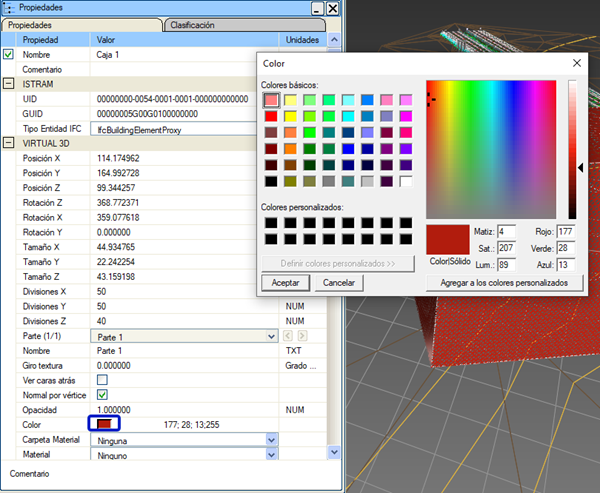
Konum (X, Y, Z): kutunun tam konumunu belirtir. Dönüş (X dönüşü, Y dönüşü, Z dönüşü): kutunun her bir eksen etrafındaki dönüşünü belirtir. Dönüşler Z->X->Y sırasında uygulanır. Z ekseni etrafındaki dönüş (azimut, heading) -400º ile 400º arasında değerler alır. X ekseni etrafındaki dönüş (pitch) -360º ile 360º arasında değerler alır. Y ekseni etrafındaki dönüş (roll) -360º ile 360º arasında değerler alır. 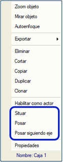BIM ağacında sağ fare tuşu ile kutuyu 3B görüntüleyicide taşıyabilir veya yerleştirebiliriz; bu, kutunun sahnedeki nesnelerin üzerine oturmasını sağlar. Yerleştir: bir kutuyu imleç ile seçilen belirli bir noktaya yerleştirmeyi sağlar. Yüzeye Oturt: kutunun altındaki "zemine" en iyi şekilde uyum sağlaması için dönüş açılarını yapılandırır. Boyut (X, Y, Z): kutunun tam boyutunu belirtmeyi sağlar. Bölüntüler (X, Y, Z): kutunun daha gerçekçi bir aydınlatmaya sahip olmasını sağlamak için yüzeylerini ızgaralara bölmek için kullanılır. Malzeme Klasörü: kutuya atanacak malzemelerin aranacağı sınıflandırma klasörünü seçmeyi sağlar. Seçilen klasöre bağlı olarak aşağıdaki malzeme seçici doldurulur. Malzeme seçici: kutuya uygulanacak malzemeyi seçmeyi sağlar. Sanal 3B > Malzeme Kütüphanesi menüsüne girilerek belirli bir malzemenin özellikleri değiştirilebilir: Doku Açısı: seçilen malzeme bir doku içeriyorsa, dokunun uygulama düzlemi üzerindeki yönelimi değiştirilebilir. Varsayılan değer 0.0º'dir. Arka Yüzü Göster: bu kutucuk işaretlendiğinde, kutunun üçgenlerinin her iki yüzeyinin de boyanacağı belirtilir. Bu, yalnızca kamera kutunun içine yerleştirilecekse kullanışlıdır. Üçgenleri çift yüzeyli boyamak zaman maliyetini artırır. Varsayılan olarak işaretli değildir. 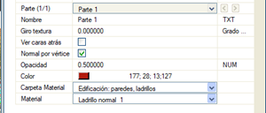Opaklık: kutunun şeffaflık yüzdesini belirtir. Varsayılan olarak şeffaflık %0'dır, yani opaktır. Köşe Başına Normal: bu kutucuk işaretlendiğinde, nesnenin her bir köşe noktasında hesaplanmış bir normal vektörü olduğu belirtilir; aksi takdirde her üçgen için bir normal vektör hesaplandığı kabul edilir. Bu nesne için fark etmez, çünkü yüzeyler köşe noktalarını paylaşmaz. Varsayılan olarak işaretlidir.  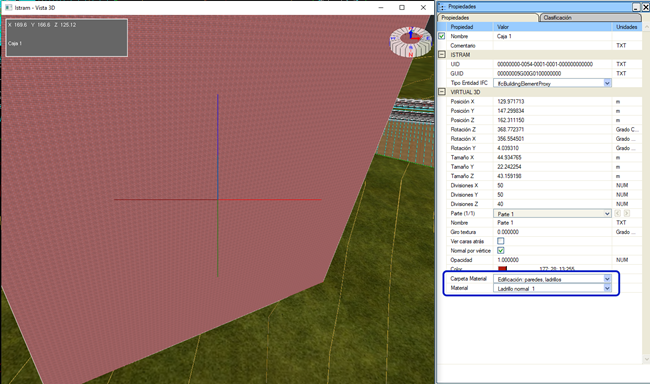
Bir nesnenin kutu olması, programın ve dolayısıyla kullanıcının, bu nesnenin bir kutu olduğu gerçeğini dikkate alarak çalışmasına ve özelliklerini değiştirmesine olanak tanır: doku kaplama, yüzey bölüntüleri ve aydınlatma, bir kutu olmasına uygun şekilde ele alınır. 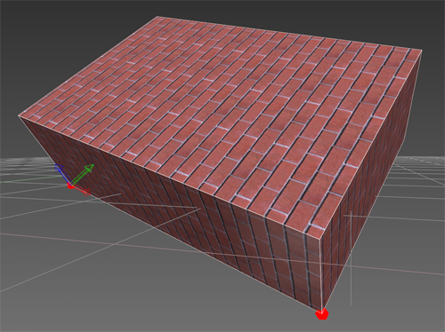 Küreler Bu sekme, aşağıdaki parametreleri kullanarak küreler oluşturmamızı sağlar:
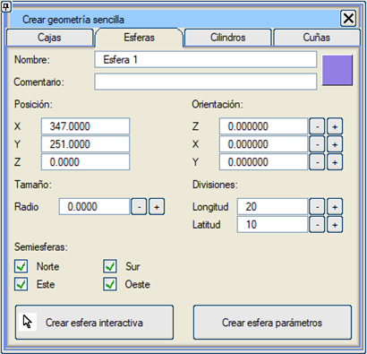
Yarıçap: kürenin tam yarıçapını belirtmeyi sağlar. Bölüntüler (Meridyenler Arası, Paraleller Arası): kürenin daha gerçekçi bir geometriye ve aydınlatmaya sahip olmasını sağlamak için yüzeyini ızgaralara bölmek için kullanılır. Yarım Küreler (Kuzey, Güney, Doğu, Batı): bazen tam bir küre oluşturmak gerekmeyebilir; bu seçeneklerle kürenin hangi parçasının oluşturulacağı kontrol edilir. Sonuç görsel veya geometrik olarak bir küre olmasa da, ortaya çıkan nesne hala bir küre olarak kabul edilir ve bu sayede seçilmeyen parçalar istenildiği zaman geri getirilebilir. 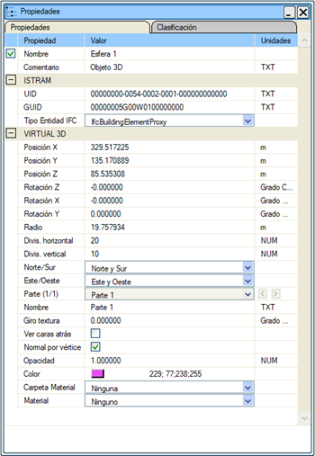Malzeme Klasörü: küreye atanacak malzemelerin aranacağı sınıflandırma klasörünü seçmeyi sağlar. Seçilen klasöre bağlı olarak aşağıdaki malzeme seçici doldurulur. Malzeme Seçici: küreye uygulanacak malzemeyi seçmeyi sağlar. Doku Açısı: seçilen malzeme bir doku içeriyorsa, dokunun uygulama düzlemi üzerindeki yönelimi değiştirilebilir. Varsayılan değer 0.0º'dir. Arka Yüzü Göster: bu kutucuk işaretlendiğinde, kürenin üçgenlerinin her iki yüzeyinin de boyanacağı belirtilir. Bu, yalnızca kamera kürenin içine yerleştirilecekse kullanışlıdır. Üçgenleri çift yüzeyli boyamak zaman maliyetini artırır. Varsayılan olarak işaretli değildir. Opaklık: kürenin şeffaflık yüzdesini belirtir. Varsayılan olarak şeffaflık %0'dır, yani opaktır. Bu değer, altındaki yatay kaydırıcı ile de kontrol edilir. Köşe Başına Normal: bu kutucuk işaretlendiğinde, nesnenin her bir köşe noktasında hesaplanmış bir normal vektörü olduğu belirtilir; aksi takdirde her üçgen için bir normal vektör hesaplandığı kabul edilir. Bu nesnede, bu seçenek işaretliyken yüzeylerin kenarları yumuşatılmış görünür. Varsayılan olarak işaretlidir. Parça seviyesinde, kürenin parçalarını etkileyen eylemler gerçekleştirilir. Meridyenler: küreyi, "meridyenler arası"nda tanımlanan kadar parçaya böler. Paraleller: küreyi, "paraleller arası"nda tanımlanan kadar parçaya böler. Bir nesnenin küre olması, programın ve dolayısıyla kullanıcının, bu nesnenin bir küre olduğu gerçeğini dikkate alarak çalışmasına ve özelliklerini değiştirmesine olanak tanır: doku kaplama, yüzey bölüntüleri ve aydınlatma, bir küre olmasına uygun şekilde ele alınır. 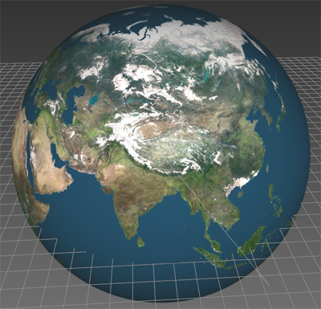
Resimde, menü görselinde tanımlanan küre gösterilmektedir. Silindirler Bu sekme, silindirler ve koniler oluşturmamızı sağlar:
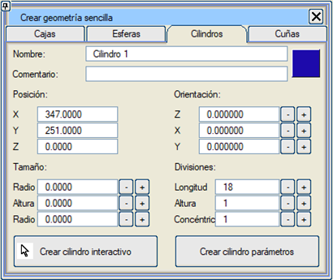
Kamalar Bir kama, ona şeklini veren üçgen ve bir "derinlik" ile tanımlanır. Eğer herhangi bir dönüş tanımlanmazsa, kama, oluşturucu üçgenin tabanına karşılık gelen dikdörtgen bir yüzey üzerine oturur. Bu üçgen, taban uzunluğu, yükseklik ve yüksekliğin tabana göre konumu ile tanımlanır. Bu sekme, kamalar oluşturmamızı sağlar:
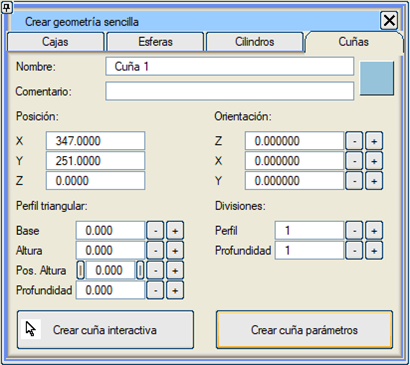
Klonlama Geometrilerin, billboard'ların veya ışıkların klonları, bilgisayar belleğindeki ve depolama ortamlarındaki veri yükünü basitleştirmek ve azaltmak için kullanılır. Bir nesne, BIM ağacında üzerine sağ fare tuşu ile tıklanıp klonlama komutu seçilerek klonlanabilir.  Resimde, menü görselinde tanımlanan klon gösterilmektedir. Billboard Klonu Billboard'lar biraz özel bir nesne türüdür ve klonları da öyledir. Billboard'lar manuel olarak oluşturulduğunda, oluşturulan her billboard kendi başına bir billboard'dur. Ancak "serpiştirme" yoluyla veya Sanal 3B'ye girilirken yüklenerek oluşturulurlarsa, aynı tipteki billboard'lar otomatik olarak klonlara dönüştürülür; ilki hariç, diğer hepsi ilkini klonlar. Eğer billboard bir trafik işareti veya bir göstergeyi temsil ediyorsa, boyutları tüm klonlar için aynıdır. Buna karşılık, eğer billboard bir ağacı temsil ediyorsa, klonlarının tamamen aynı olmaması ilginç olabilir. Ayrıca, billboard'ların özellikleri, ilişkili oldukları sembollerde veya hücrelerde saklanır. Bu şekilde, boyutları değiştirilerek benzer ağaçlardan oluşan bir orman oluşturulabilir. Bu nedenle, normal bir billboard için sunulan tüm seçenekler burada da mevcuttur. Kaydedilmiş Geometrileri Yükleme Bu araç, .3do uzantılı bir dosyada saklanan bir nesneyi Sanal 3B ortamımıza aktarmamızı sağlar. Yerleştirme varsayılan olarak (0, 0, 0) noktasında yapılır. 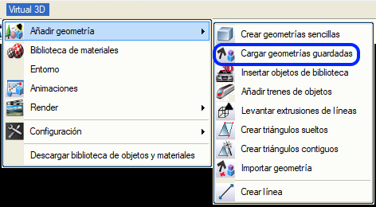
Kütüphaneden Nesne Ekleme Bu araç, kütüphane nesnelerini Sanal 3B ortamımıza eklememizi sağlar. Istram kurulumu, kullanıcının projelerinde serbestçe kullanabileceği nesneler içeren bir kütüphane ile tamamlanabilir: LIBSOL kütüphanesi. Kullanıcı önce eklemek istediği nesneyi seçer ve yapılandırır, sonra Oluştur'a basar ve son olarak seçilen nesneyi imlecin gösterdiği noktaya eklemek için Sanal 3B penceresine tıklar. 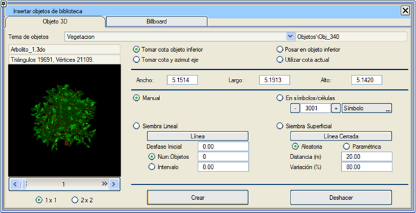OL_svertical.html
Kütüphaneden Nesne Ekleme penceresi aşağıdaki seçenekleri içerir:
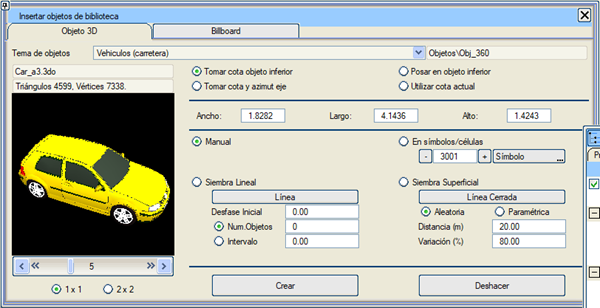
Nesnenin üzerine sağ fare tuşu ile tıklayarak onu eksen yönünde oturtabilirim: 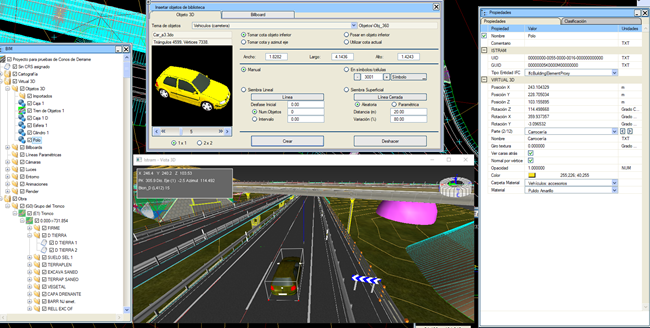
Billboard Bu seçenek, önceden tanımlanmış ve sınıflandırılmış 2B görüntüleri sahneye dahil etmeye ve bunları üç boyutlu nesneler olarak kullanmaya olanak tanır. Önce dahil edilmek istenen görüntü teması, ardından görüntünün kendisi ve son olarak da yerleştirme yöntemi seçilmelidir: manuel yerleştirme, doğrusal serpiştirme veya kapalı bir alan içine serpiştirme. Görüntülerin sınıflandırılması, onları tanımlayan dosyaların bulunduğu klasörler aracılığıyla yapılır. Kütüphaneye, ilgili klasörlere dosyaları eklenerek yeni görüntüler eklenebilir. 2B görüntüler, billboard adı verilen dikdörtgen bir geometrinin dokusu (texture) olarak kullanılır. Bu geometrinin yatay (yatay işaretleme) veya dikey (düşey işaretleme, ağaçlar, reklam panoları) olacağı ve dikey olması durumunda, geometrinin sabit bir yönelime mi sahip olacağı (levhalar) yoksa kameraya dönük kalacak şekilde döneceği mi belirtilir.  Billboard'lar, harita üzerinde oluşturulan semboller ve hücrelerle ilişkilidir. Bunları korumak için harita ile birlikte kaydetmek gerekir. Sanal 3B'ye her girildiğinde ve haritada billboard'larla ilişkili semboller veya hücreler bulunduğunda, bu sembollere veya hücrelere karşılık gelen billboard'lar oluşturulur. Billboard'ların, ilişkili oldukları sembollerin veya hücrelerin kendi "çizimlerinin" görüntüsünü alması sağlanabilir. Bu, işaretleme ve levhalar için çok kullanışlıdır. Görüntülerin siyah kısımları, bir billboard'da kullanıldığında şeffaf kabul edilir. Bu nesneler ve görüntüler olduğu gibi kullanılabilir, herhangi bir dönüşüme ihtiyaç duymazlar, ancak kullanıcının ihtiyaçlarına göre değiştirilebilirler. Billboard Seçimi: Sınıf: eklenmek istenen görüntülerin temasını aşağıdakiler arasından seçmeyi sağlar: -Göstergeler (bir noktayı işaretler ve bir kot veya km yazar...) -Yatay İşaretleme (yön okları ve yol üzerine çizilmiş işaretler) -Düşey İşaretleme (bilgi, yasaklama, tehlike, zorunluluk... bir direk ve arka kısım eklenebilir) -Bitki Örtüsü ve Ağaçlar (otlar, çalılar ve ağaçlar). Tip: sınıftaki görüntülerden sembollerle, hücrelerle veya her ikisiyle ilişkili olanları seçerek sahnede gösterilmesini ve yerleştirilmesini sağlar. Mevcut elemanlar listesi: seçilebilir tüm nesneleri içeren bir açılır liste. İlişkili sembol veya hücre ve görüntü: bu billboard türüyle ilişkili sembol veya hücrenin dosya adı gösterilir. Kütüphaneden bir görüntü kullanılıyorsa, onu içeren dosyanın adı da eklenir. Billboard önizleme görüntüsü: görüntü gösterilir. 1x1, 2x2, 3x3 ve 3x5 seçenekleriyle her seferinde 1 ila 15 arasında görüntü görülebilir. Orijinal boyut: görüntünün temsil ettiği nesnenin boyutunu bildirir. Genişlik, Yükseklik: billboard'un boyutları, nesne ölçeklenerek değiştirilebilir. Sahneden Z Al: billboard sahneye yerleştirilirken, kotunu üzerinde bulunduğu geometriden alır. Mevcut Z'yi Kullan: billboard sahneye yerleştirilirken, kotunu Harita modülündeki Mevcut Kot değerinden alır. Zemin Z'si: "Sahneden Z Al" ile aynı şekilde çalışır ancak yatay billboard'ları zemin geometrisine uyacak şekilde döndürür. Oluşturma ve Serpiştirme Billboard oluşturmanın varsayılan yolu "Manuel"dir, yani billboard sahneden seçilen noktada oluşturulur. Ancak menüde sunulan kriterlere göre otomatik olarak da yapılabilir. Doğrusal Serpiştirme: billboard'ları bir çizgi boyunca yerleştirmeyi sağlar; çizgi üzerine konulacak toplam billboard sayısı veya hangi aralıklarla yerleştirileceği belirtilebilir. Ayrıca, ilk billboard'un çizginin ilk noktasına yerleştirilmemesi için bir "Başlangıç Ötelemesi" belirtilir. Yüzeysel Serpiştirme: billboard'ların yerleştirileceği alanı belirtmek için kapalı bir çizgi kullanılır. Serpiştirme "rastgele" veya billboard'lar arasındaki mesafe ve bu ızgara düğümlerine göre konumun rastgele değişimi ile parametrelendirilen düzenli bir ızgara şeklinde olabilir. Oluştur: bu buton, belirtilen billboard oluşturma işlemini yürütür. Oluşturma modu manuel ise, 3B görünümde her tıklandığında seçilen o noktada bir billboard oluşturulur ("Esc" tuşuna basılarak durdurulur). Her oluşturma işlemi arasında billboard tipi değiştirilebilir. Geri Al: gerçekleştirilen son oluşturma işlemini siler. Nesne Dizileri Ekleme Bu menüde, "nesne dizisi" olarak adlandırılan özel bir aktör türü oluşturulabilir veya değiştirilebilir. Bu, aynı kılavuzu (yörüngeyi) ancak farklı ötelemelerle takip edecek bir grup nesneden oluşur. Açık ve anında akla gelen kullanım alanı trenleri ve metroları tanımlamaktır, ancak aynı zamanda her türden araç konvoylarını tanımlamak için de kullanılır.  Bir dizi tanımlamak için, önce aracı başlatır ve Nesne Ekle'ye tıklarız. Ardından, diziye eklemek istediğimiz nesnelere sırayla tıklarız, ta ki Nesne Ekleme İşlemini Bitir'e tıklayana kadar. Nesneler eklendikçe, bir demiryolu treniymiş gibi bir önceki nesneye bitişik olarak yerleştirilmesi için öteleme verileri doldurulur. 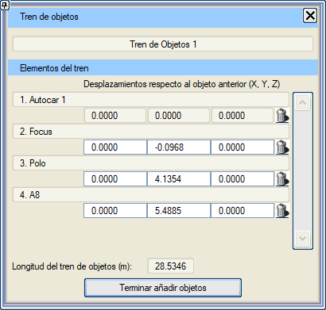
Çizgiden Yükselterek Katı Model Oluşturma Bu araç, haritadaki bir çizgiden dikey bir yükseltme (extrusion) oluşturur. Bu, örneğin eşyükselti eğrileri arasında haritada görünen belirli yapıları oluşturmak için çok ilginç bir araçtır.   Araç, bir harita çizgisinden dikey "duvarlar" yükseltir ve ardından bunları üst ve alt kapaklarla tamamlar. Mevcut seçenekler şunlardır:
Bağımsız/Bitişik Üçgenler Oluşturma Bu iki araçla, kullanıcının isteğine göre bağımsız veya bitişik üçgenler oluşturulabilir. 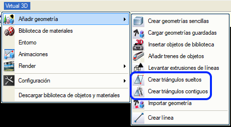
Seçildikten sonra, üçgenin üç köşe noktasını yerleştirmek için Sanal 3B penceresinde noktalara tıklamak yeterlidir.  Eğer bitişik üçgenler seçeneği kullanılırsa, her ek tıklama, seçilen noktaya en yakın kenarı kullanarak yeni bir üçgen oluşturur. Geometri İçe Aktarma  Bu araç, 3do, obj, ifc, 3ds, dxf veya dwg formatlarındaki 3B nesne dosyalarını eklemeyi sağlar. Yerleştirme, koordinatları yazılan bir XYZ noktasında veya Sanal 3B penceresinde tıklanan noktada yapılabilir. Nesnenin yerel orijinini (bağlantı noktası) nesnenin merkezine, minimum koordinatlarına veya kullanıcı tanımlı koordinatlara yerleştirmek için seçenekler mevcuttur. Bu araç, 3do, obj, ifc, 3ds, dxf veya dwg formatlarındaki 3B nesne dosyalarını eklemeyi sağlar. Yerleştirme, koordinatları yazılan bir XYZ noktasında veya Sanal 3B penceresinde tıklanan noktada yapılabilir. Nesnenin yerel orijinini (bağlantı noktası) nesnenin merkezine, minimum koordinatlarına veya kullanıcı tanımlı koordinatlara yerleştirmek için seçenekler mevcuttur.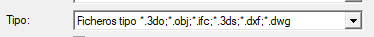 SANAL 3B, diğer uygulamalardan nesne eklemeye olanak tanır: 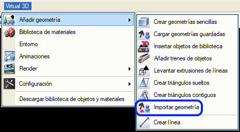
Geometriyi içe aktar komutuna tıklandığında, harici dosyayı Istram'a aktarabileceğimiz aşağıdaki diyalog kutusu açılacaktır: 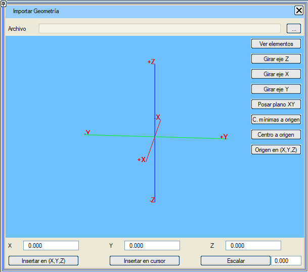
Geometri içe aktarıldıktan sonra, kullanıcıdan bu geometriyi yerleştirmek için bir konum seçmesi istenecektir. Ölçekle: içe aktarılan geometriye, hücrenin gereksinim duyduğu boyutlara uyarlamak için bir ölçek faktörü uygular. Harita Editörü->Ekle Menüsü (dikey açılır)->3B Geometri İçe Aktararak Hücre Oluştur'dan bu içe aktarıcıya bazı ek seçeneklerle erişilir: 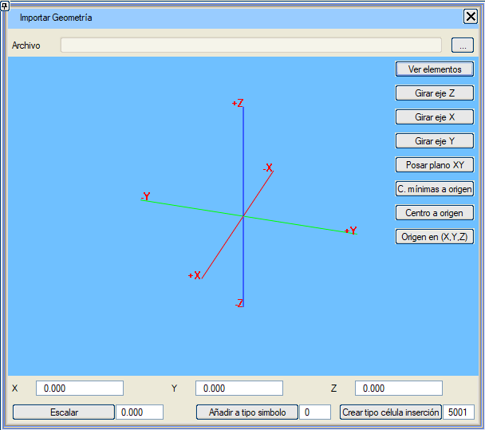 İlişkili PSET'lere sahip bir IFC dosyası içe aktardığımızda, bunlar korunacaktır. Birden fazla dosya eklersek, yalnızca ilkinin özellikleri korunur. Mevcut bir sembolü değiştirmeye ( Sembol Tipine Ekle butonu aracılığıyla) ve yüklenen geometriyi içeren komutu eklemeye izin verilir. Ve Yerleştirme Hücre Tipi Oluştur butonu ile bir hücre oluşturulur. Çizgi Oluşturma 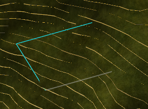Bu araç, Sanal 3B penceresine tıklayarak çizgiler eklemeyi sağlar. Çizgiler, mevcut çizgi tipiyle haritaya eklenir. |
 : İşaretçi simgesi, parametreleri grafiksel olarak girmemizi sağlar; sırasıyla önce XYZ konumunu belirleyen köşeyi, sonra diğer köşelerden birini (X boyutunu ve yönelimi tanımlayarak), ardından başka bir köşeyi (Y boyutunu tanımlayarak) ve son olarak Z boyutunu girerek.
: İşaretçi simgesi, parametreleri grafiksel olarak girmemizi sağlar; sırasıyla önce XYZ konumunu belirleyen köşeyi, sonra diğer köşelerden birini (X boyutunu ve yönelimi tanımlayarak), ardından başka bir köşeyi (Y boyutunu tanımlayarak) ve son olarak Z boyutunu girerek.